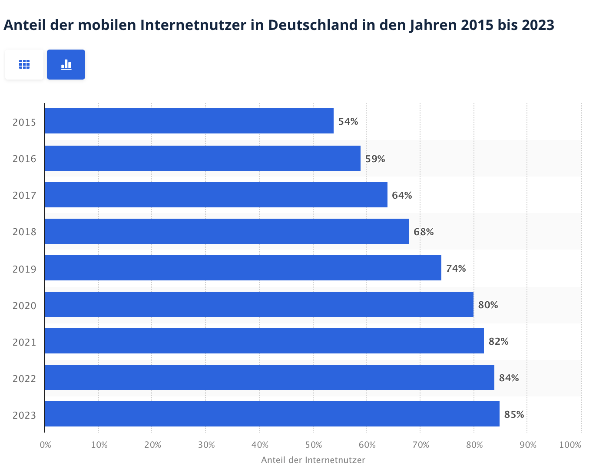

Was ist Mobile First?
-
Definition: Fokus auf die Optimierung für mobile Geräte, dann
sukzessive Anpassungen an größere Bildschirme.
-
Entwicklung startet beim kleinsten Layout (kleinster Viewport).
- Im Zentrum: optimale Lösung für mobile Endgeräte.

Warum Mobile First?
-
Mehr als 80% der Internetnutzer in Deutschland surfen mobil
(seit 2015).
- Smartphones und Tablets dominieren das Nutzungsverhalten.
-
Trends und Benutzergewohnheiten erfordern mobile Optimierung.

Mobile First Prinzipien
- Beschränkung auf das Wesentliche
- Maximale Performance
- Strukturierte Inhalte für schnellen Zugriff
- Design auf kleine Displays anpassen
- Reduktion von Code und unnötigen Funktionen
Vorteile von Mobile First
- Große Reichweite durch mobile Optimierung
- Schnelle und effiziente Entwicklung
- Benutzerfreundliches Layout
- Schnellere Ladezeiten
-
Minimalistisches Design verbessert Lesbarkeit und reduziert
Ablenkung
Nachteile des Mobile First Ansatzes
- Komplizierte Anpassung für Desktops
- Nicht für komplexe Webanwendungen geeignet
- Einschränkungen bei Design und Platzverhältnissen
Herausforderungen von Mobile First
-
Priorisierung von Inhalten und Verzicht auf weniger Wichtiges
- Klare Navigation und klickbare Buttons erforderlich
- Darstellung komplexer Daten (z. B. Tabellen)
- Balance zwischen Informationsfülle und Funktionalität
Mobile First und Kosteneffizienz
- Argumente dafür:
- Reduzierte Entwicklungszeit
- Wartungsfreundlichkeit durch Minimalismus
- Argumente dagegen:
- Kosten für Tools und Tests
- Anpassungsaufwand für größere Bildschirme
Wann ist eine Webseite Mobile Friendly?
- Touch-freundliche Bedienelemente: Große Buttons, keine kleinen Klickziele.
- Lesbarkeit: Kontrastreiche und klare Typografie für kleine Bildschirme.
- Einfachheit: Nutzer erwarten schnelle und intuitive Navigation.